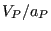

|
Keyword type: model definition
This option may be used to specify a local axis system X'-Y'-Z' to be used for defining SPC's, MPC's and nodal forces. For now, rectangular and cylindrical systems can be defined, triggered by the parameter TYPE=R (default) and TYPE=C.
A rectangular system is defined by specifying a point a on the local X' axis and a point b belonging to the X'-Y' plane but not on the X' axis. A right hand system is assumed (Figure 154).
|
When using a cylindrical system two points a and b on the axis must be given. The X' axis is in radial direction, the Z' axis in axial direction from point a to point b, and Y' is in tangential direction such that X'-Y'-Z' is a right hand system (Figure 155).
|  |
The parameter NSET, specifying the node set for which the transformation applies, is required.
If several transformations are defined for one and the same node, thelast transformation takes effect.
Notice that a non-rectangular local coordinate system is not allowed in nodeswhich belong to plane stress, plane strain, or axisymmetric elements. If alocal rectangular system is defined the local z-axis must coincide with theglobal z-axis (= axis orthogonal to the plane in which these elements aredefined).
First line:
Example: *TRANSFORM,NSET=No1,TYPE=R 0.,1.,0.,0.,0.,1.
assigns a new rectangular coordinate system to the nodes belonging to (node) set No1. The x- and the y-axes in the local system are the y- and z-axes in the global system.
Example files: segment1, segment2, segmentf, segmentm.